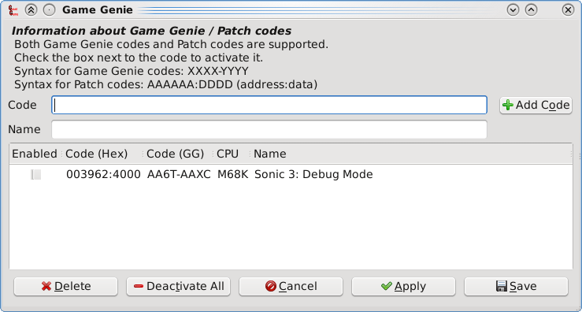

The Game Genie plugin allows you to enter cheat codes for various games. Codes entered for a game are saved in a game-specific patch file located in the emulator's save file directory. If the emulator supports MDP directory registration, then this directory can be customized from within the emulator.
Supported code formats: (M68K)
| Example Code | Description |
|---|---|
| AA6T-AAXC | Game Genie. |
| 123456:7890 | 16-bit patch code. |
| 123456:78 | 8-bit patch code. |
| 123456:7890ABCD | 32-bit patch code. |
Note: 16-bit and 32-bit patch codes for the M68K CPU must be word-aligned; that is, they must have an even address. Unaligned addresses will not be accepted, and will show an error message.
Version 1.0 of the Game Genie plugin only supports the M68K address space. Future versions of the plugin will support the Z80, S68K, MSH2, and SSH2 address spaces.
Older versions of Gens (and Gens/GS) included built-in Game Genie functionality. The older Game Genie functionality used a different format for storing patch codes. The old format is a two-field tab-delimited file, where the first field is the code as entered by the user and the second field is the name of the code. An example can be seen below.
AA6T-AAXC Sonic 3: Level Select
The Game Genie plugin uses a new patch code file format. The format starts with a one-line header, followed by colon-delimited codes. An example of this format can be seen below.
MDP Game Genie Patch Code File M68K:003962:4000:Sonic 3: Level Select
The first field indicates the CPU this code is intended for. Only one CPU is valid for version 1.0 of the Game Genie plugin, "M68K" (the main MC68000 CPU). The second field indicates the address, in hexadecimal. The third field indicates the data, in hexadecimal. The data field is either 2 digits for 8-bit, 4 digits for 16-bit, or 8 digits for 32-bit. Finally, the last field contains the name of the code. Note that extra colons in the last field are included as part of the code's name.
For compatibility purposes, the Game Genie plugin supports loading old patch code files; however, all new patch files will be saved in the new patch code file format.